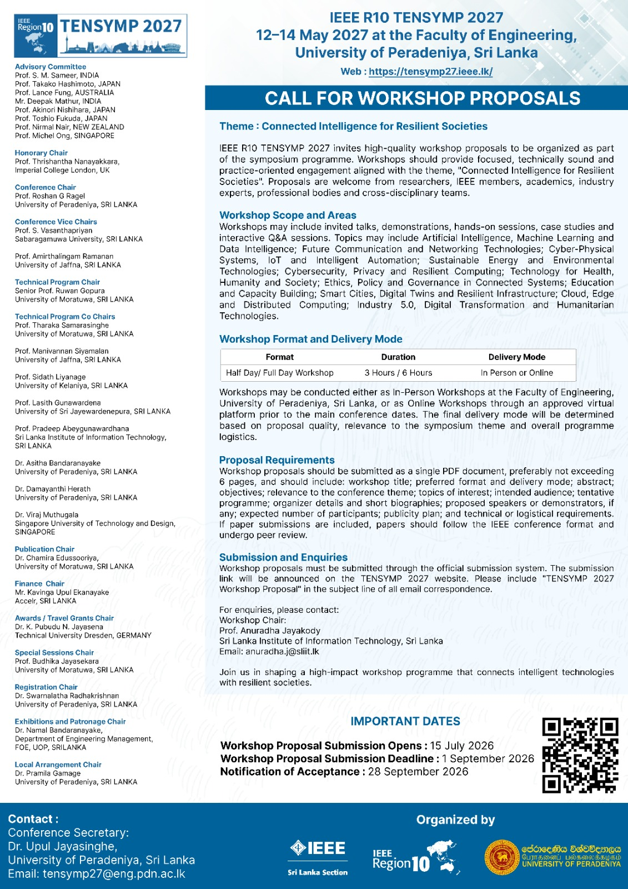

IEEE R10 TENSYMP 2027 — Sri Lanka
Connected Intelligence for Resilient Societies
12–14 May 2027 | Faculty of Engineering, University of Peradeniya, Sri Lanka
https://tensymp27.ieee.lk/
IEEE R10 TENSYMP 2027 invites high-quality workshop proposals to be organized as part of the symposium programme. Workshops should provide focused, technically sound and practice-oriented engagement aligned with the theme, “Connected Intelligence for Resilient Societies”. Proposals are welcome from researchers, IEEE members, academics, industry experts, professional bodies and cross-disciplinary teams.
Workshop Scope and Areas
Workshops may include invited talks, demonstrations, hands-on sessions, case studies and interactive Q&A sessions. Topics may include:
- Artificial Intelligence, Machine Learning and Data Intelligence
- Future Communication and Networking Technologies
- Cyber-Physical Systems, IoT and Intelligent Automation
- Sustainable Energy and Environmental Technologies
- Cybersecurity, Privacy and Resilient Computing
- Technology for Health, Humanity and Society
- Ethics, Policy and Governance in Connected Systems
- Education and Capacity Building
- Smart Cities, Digital Twins and Resilient Infrastructure
- Cloud, Edge and Distributed Computing
- Industry 5.0, Digital Transformation and Humanitarian Technologies
Workshop Format and Delivery Mode
| Format | Duration | Delivery Mode |
|---|---|---|
| Half-Day / Full-Day Workshop | 3 hours / 6 hours | In-person or Online |
Workshops may be conducted either as In-Person Workshops at the Faculty of Engineering, University of Peradeniya, Sri Lanka, or as Online Workshops through an approved virtual platform prior to the main conference dates. The final delivery mode will be determined based on proposal quality, relevance to the symposium theme and overall programme logistics.
Proposal Requirements
Workshop proposals should be submitted as a single PDF document, preferably not exceeding 6 pages, and should include:
- Workshop title
- Preferred format and delivery mode
- Abstract and objectives
- Relevance to the conference theme
- Topics of interest
- Intended audience
- Tentative programme
- Organizer details and short biographies
- Proposed speakers or demonstrators, if any
- Expected number of participants
- Publicity plan
- Technical or logistical requirements
If paper submissions are included, papers should follow the IEEE conference format and undergo peer review.
Important Dates
| Activity | Date |
|---|---|
| Workshop Proposal Submission Opens | 15 July 2026 |
| Workshop Proposal Submission Deadline | 1 September 2026 |
| Notification of Acceptance | 28 September 2026 |
Submission and Enquiries
Workshop proposals must be submitted through the official submission system. The submission link will be announced on the TENSYMP 2027 website. Please include “TENSYMP 2027 Workshop Proposal” in the subject line of all email correspondence.
For enquiries, please contact:
Workshop Chair
Prof. Anuradha Jayakody
Sri Lanka Institute of Information Technology, Sri Lanka
Email: anuradha.j@sliit.lk
Join us in shaping a high-impact workshop programme that connects intelligent technologies with resilient societies.